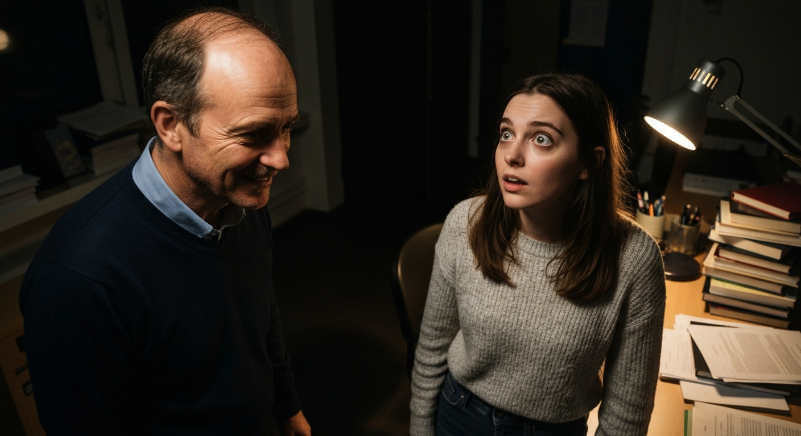

他，是我的禁忌，也是我的毒藥。
第 1 篇
那年夏天，我的世界被他強行闖入。
大四那年夏天，我的人生本該是一片靜水深流，畢業論文和找實習填滿了所有空白。直到，沈洛出現，像一顆彗星，轟然撞進我平靜的軌道。那時，他剛從國外回來，受邀擔任我們系的客座講師，主講一門名為「文學與禁忌」的課程。光聽課名就夠吊人胃口，更別說本人。他走進教室的那一刻，我甚至能感覺到空氣都凝滯了，所有人的目光都被他吸走。筆挺的黑色襯衫，微捲的黑髮下是深邃的眉眼，不笑的時候自帶一種生人勿近的氣場。那種從骨子裡散發出的清冷與禁慾感，像極了《傲慢與偏見》裡初見的達西先生，傲慢得讓人想一探究竟。
「各位同學，我是沈洛。」他的聲音低沉而富有磁性，卻也帶著一點點疏離。「這門課，我們不談教科書上的定義，只談，你心底那些不可說的慾望。」
一瞬間，教室裡掀起一陣竊竊私語，我卻只感覺到心臟被輕輕地敲了一下。他望向我的眼神，像是在夜空中捕捉到一顆特別的星辰，短暫卻又意味深長。那不是什麼一見鍾情，而是一種危險的預感，預感有什麼東西正在悄然改變。你知道嗎？有時候，一個眼神就足以成為往後所有故事的開端。我曾以為，我的人生會循規蹈矩地發展，直到他出現，用他獨特的方式，在我心裡種下一顆名為「禁忌」的種子。
「各位同學，我是沈洛。」他的聲音低沉而富有磁性，卻也帶著一點點疏離。「這門課，我們不談教科書上的定義，只談，你心底那些不可說的慾望。」
一瞬間，教室裡掀起一陣竊竊私語，我卻只感覺到心臟被輕輕地敲了一下。他望向我的眼神，像是在夜空中捕捉到一顆特別的星辰，短暫卻又意味深長。那不是什麼一見鍾情，而是一種危險的預感，預感有什麼東西正在悄然改變。你知道嗎？有時候，一個眼神就足以成為往後所有故事的開端。我曾以為，我的人生會循規蹈矩地發展，直到他出現，用他獨特的方式，在我心裡種下一顆名為「禁忌」的種子。
💬 一個眼神，足以成為往後所有故事的開端。
第 2 篇
他不是春風，他是會灼傷我的野火。
沈洛的課，總是充滿了意想不到的挑戰。他從不直接給答案，只會丟出一連串讓你無法迴避的問題，逼著你去觸碰自己內心最隱蔽的角落。他會問：「如果愛與道德相悖，你選擇哪一個？」、「禁忌之所以為禁忌，是因為它真的不該被觸碰，還是因為我們懼怕觸碰之後的代價？」
一開始，我只是個努力想融入的普通學生，但他的目光似乎總是能穿透人群，準確地落在我的身上。有一次課堂討論，我小心翼翼地發表了對「禁忌之愛」的看法，我說：「或許有些愛，本身就是一種原罪，它誘惑你，卻也註定會毀滅你。」他當時只是挑眉一笑，沒有反駁，卻也沒肯定，只是眼神像要把我看穿。下課後，他把我叫住，語氣平靜地說：「林語晨，妳的思考很有趣，但妳的『毀滅』，是來自外界的評判，還是來自內心的恐懼？」
那一刻，我感覺臉頰發燙，心跳像擂鼓一樣。他直視我的眼睛，那雙深邃的眸子裡，藏著一種難以言喻的魔力，讓我無處遁形。他不是溫暖的春風，反而更像一團會灼傷人的野火，誘惑我靠近，又讓我心生畏懼。我們之間那條師生的界線，原本清晰無比，卻在他一句又一句的追問下，開始變得模糊。這種感覺，就像《挪威的森林》裡渡邊與直子之間那種無法言說的吸引，明知危險，卻又無法自拔地被捲入。你說，是誰先跨越了那條線？是他的眼神，還是我早已蠢蠢欲動的心？
一開始，我只是個努力想融入的普通學生，但他的目光似乎總是能穿透人群，準確地落在我的身上。有一次課堂討論，我小心翼翼地發表了對「禁忌之愛」的看法，我說：「或許有些愛，本身就是一種原罪，它誘惑你，卻也註定會毀滅你。」他當時只是挑眉一笑，沒有反駁，卻也沒肯定，只是眼神像要把我看穿。下課後，他把我叫住，語氣平靜地說：「林語晨，妳的思考很有趣，但妳的『毀滅』，是來自外界的評判，還是來自內心的恐懼？」
那一刻，我感覺臉頰發燙，心跳像擂鼓一樣。他直視我的眼睛，那雙深邃的眸子裡，藏著一種難以言喻的魔力，讓我無處遁形。他不是溫暖的春風，反而更像一團會灼傷人的野火，誘惑我靠近，又讓我心生畏懼。我們之間那條師生的界線，原本清晰無比，卻在他一句又一句的追問下，開始變得模糊。這種感覺，就像《挪威的森林》裡渡邊與直子之間那種無法言說的吸引，明知危險，卻又無法自拔地被捲入。你說，是誰先跨越了那條線？是他的眼神，還是我早已蠢蠢欲動的心？
💬 有些禁忌，不是不該觸碰，是懼怕觸碰之後的代價。

第 3 篇
那一夜，禁忌的界線被他徹底瓦解。
期末，沈洛要求每位學生提交一份關於「禁忌」主題的個人報告，形式不拘。我絞盡腦汁，寫了一篇關於「師生之間情感邊界」的小說，以第一人稱描寫那種若有似無、壓抑又誘惑的曖昧。我把所有隱秘的心事都藏在故事裡，以為他不會察覺。
提交報告後，沈洛約我到他的辦公室談話。那晚，學校裡幾乎沒人了，只剩下走廊微弱的燈光。他坐在辦公桌後，讀著我的報告，臉上沒有任何表情。空氣靜得我能聽見自己的心跳聲，一下一下，像在敲擊禁忌的門。他讀完，緩緩抬起頭，目光灼灼地望向我。「林語晨，妳寫得很生動。」他聲音低沉，帶著一絲難以捉摸的笑意，「但妳的『虛構』，其實比現實更真實，不是嗎？」
那一刻，所有的偽裝都被他輕易撕裂。我感覺自己像是被剝光了，赤裸裸地站在他面前。我慌亂地想解釋，卻被他打斷。「我知道妳心裡在想什麼。」他站起身，緩緩走到我面前，高大的身軀投下陰影，將我完全籠罩。「這個故事，妳的主人公，是不是在等一個擁抱？」他輕聲問道，聲音裡帶著一種致命的蠱惑。我抬頭，對上他深邃的眼睛，那裡面不再有疏離，只有一種強烈的、不加掩飾的慾望。我的理智在崩塌，心臟幾乎要跳出胸腔。禁忌的界線，在那一刻，被他徹底瓦解。他，是我的禁忌，也是我的毒藥，明知有毒，卻無法拒絕。
提交報告後，沈洛約我到他的辦公室談話。那晚，學校裡幾乎沒人了，只剩下走廊微弱的燈光。他坐在辦公桌後，讀著我的報告，臉上沒有任何表情。空氣靜得我能聽見自己的心跳聲，一下一下，像在敲擊禁忌的門。他讀完，緩緩抬起頭，目光灼灼地望向我。「林語晨，妳寫得很生動。」他聲音低沉，帶著一絲難以捉摸的笑意，「但妳的『虛構』，其實比現實更真實，不是嗎？」
那一刻，所有的偽裝都被他輕易撕裂。我感覺自己像是被剝光了，赤裸裸地站在他面前。我慌亂地想解釋，卻被他打斷。「我知道妳心裡在想什麼。」他站起身，緩緩走到我面前，高大的身軀投下陰影，將我完全籠罩。「這個故事，妳的主人公，是不是在等一個擁抱？」他輕聲問道，聲音裡帶著一種致命的蠱惑。我抬頭，對上他深邃的眼睛，那裡面不再有疏離，只有一種強烈的、不加掩飾的慾望。我的理智在崩塌，心臟幾乎要跳出胸腔。禁忌的界線，在那一刻，被他徹底瓦解。他，是我的禁忌，也是我的毒藥，明知有毒，卻無法拒絕。
💬 我的『虛構』，其實比現實更真實，不是嗎？